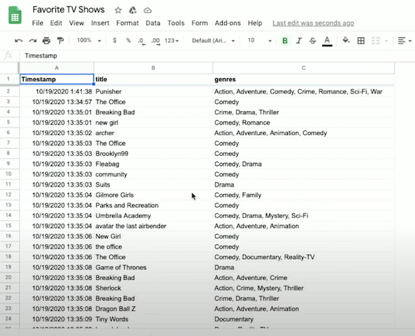
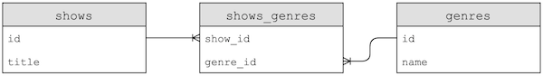

Lecture 7
Data processing
- Last week, we collected a survey of Hogwarts house preferences, and tallied the data from a CSV file with Python.
- This week, we’ll collect some more data about your favorite TV shows and their genres.
- With hundreds of responses, we can start looking at the responses on Google Sheets, a web-based spreadsheet application, showing our data in rows and columns:
- Some responses show a single genre selected, like “Comedy”, while others, with multiple genres, show them in one cell still but separated by a comma, like “Crime, Drama”.
- With a spreadsheet app like Google Sheets, Apple’s Numbers, Microsoft Excel, or others, we can:
- sort our data
- store data in rows and columns, where each additional entry is a row, and properties of each entry, like title or genre, is a column
- decide on the schema, or format, of our data in advance by choosing the columns
- A database is a file or program that stores data for us.
- A CSV file is a flat-file database where the data for each column is separated by commas, and each row is on a new line, saved simply as a file.
- If some data in a CSV contains a comma itself, then it’s usually surrounded by quotes as a string to prevent confusion.
- Formulas and calculations in spreadsheet programs are built into the programs themselves; a CSV file can only store raw, static values.
- We’ll download a CSV file with the data from the spreadsheet with “File > Download”, upload it to our IDE by dragging and dropping it into our file tree, and see that it’s indeed a text file with comma-separated values matching the spreadsheet’s data.
Cleaning
- We’ll start by writing
favorites.py, choosing Python over C as our tool of choice for its libraries and abstraction:import csv with open("Favorite TV Shows - Form Responses 1.csv", "r") as file: reader = csv.reader(file) next(reader) for row in reader: print(row[1])- We’re going to open the file and make sure we can print the title of each row, using the
withkeyword in Python that will close our file for us after we leave its scope, based on indentation. openuses read mode by default, but to be clear in our code we’ll addrexplicitly.- The
csvlibrary has areaderfunction that will create areadervariable we can use. - We’ll call
nextto skip the first row, since that’s the header row, and then use a loop to print the second column in each row, which is the title.
- We’re going to open the file and make sure we can print the title of each row, using the
- To improve this, we’ll use a
DictReader, dictionary reader, which creates a dictionary from each row, allowing us to access each column by its name. We also don’t need to skip the header row in this case, since theDictReaderwill use it automatically.import csv with open("Favorite TV Shows - Form Responses 1.csv", "r") as file: reader = csv.DictReader(file) for row in reader: print(row["title"])- Since the first row in our CSV has the names of the columns, it can be used to label each column in our data as well.
- Now let’s take a look at all the unique titles in our responses:
import csv titles = set() with open("Favorite TV Shows - Form Responses 1.csv", "r") as file: reader = csv.DictReader(file) for row in reader: titles.add(row["title"]) for title in titles: print(title)- We’ll create a set called
titles, and add each row’s title value to it. Callingaddon a set will automatically check for duplicates and ensure that there are only unique values. - Then, we can iterate over the elements in the set with a
forloop, printing each of them.
- We’ll create a set called
- To sort the titles, we can just change our loop to
for title in sorted(titles), which will sort our set before we iterate over it. - We’ll see that our titles are considered different if their capitalization or punctuation is different, so we’ll clean up the capitalization by adding title in all uppercase with
titles.add(row["title"].upper()). - We’ll also have to remove spaces before or after, so we can add
titles.add(row["title"].strip().upper())which strips the whitespace from the title, and then converts it to uppercase. - Now, we’ve canonicalized, or standardized, our data, and our list of titles are much cleaner.
Counting
- We can use a dictionary, instead of a set, to count the number of times we’ve seen each title, with the keys being the titles and the values being an integer counting the number of times we see each of them:
import csv titles = {} with open("Favorite TV Shows - Form Responses 1.csv", "r") as file: reader = csv.DictReader(file) for row in reader: title = row["title"].strip().upper() if title not in titles: titles[title] = 0 titles[title] += 1 for title in sorted(titles): print(title, titles[title])- Here, we first check if we’ve haven’t seen the title before (if it’s
not in titles). We set the initial value to 0 if that’s the case, and then we can safely increment the value by 1 every time. - Finally, we can print out our dictionary’s keys and values by passing them as arguments to
print, which will separate them by a space for us.
- Here, we first check if we’ve haven’t seen the title before (if it’s
- We can sort by the values in the dictionary by changing our loop to:
... def f(title): return titles[title] for title in sorted(titles, key=f, reverse=True): ...- We define a function,
f, which just returns the count of a title in the dictionary withtitles[title]. Thesortedfunction, in turn, will use that function as the key to sort the dictionary’s elements. And we’ll also pass inreverse=Trueto sort from largest to smallest, instead of smallest to largest. - So now we’ll see the most popular shows printed.
- We define a function,
- We can actually define our function in the same line, with this syntax:
for title in sorted(titles, key=lambda title: titles[title], reverse=True):- We pass in a lambda, or anonymous function, which has no name but takes in some argument or arguments, and returns a value immediately.
Searching
- We can write a program to search for a title and report its popularity:
import csv title = input("Title: ").strip().upper() with open("Favorite TV Shows - Form Responses 1.csv", "r") as file: reader = csv.DictReader(file) counter = 0 for row in reader: if row["title"].strip().upper() == title: counter += 1 print(counter)- We ask the user for input, and then open our CSV file. Since we’re looking for just one title, we can have one
countervariable that we increment. - We check for matches after standardizing both the input and the data as we check each row.
- We ask the user for input, and then open our CSV file. Since we’re looking for just one title, we can have one
- The running time of this is O(n), since we need to look at every row.
Relational databases
- Relational databases are programs that store data, ultimately in files, but with additional data structures that allow us to search and store data more efficiently.
- With another programming language, SQL (pronounced like “sequel”), Structured Query Language, we can interact with many relational databases and their tables, like spreadsheets, which store data.
- We’ll use a common database program called SQLite, one of many available programs that support SQL. Other database programs include Oracle Database, MySQL, PostgreSQL, and Microsoft Access.
- SQLite stores our data in a binary file, with 0s and 1s that represent data efficiently. We’ll interact with our tables of data through a command-line program,
sqlite3. - We’ll run some commands in the CS50 IDE to import our CSV file into a table called “shows”:
~/ $ sqlite3 SQLite version 3.22.0 2018-01-22 18:45:57 Enter ".help" for usage hints. sqlite> .mode csv sqlite> .import 'Favorite TV Shows (Responses) - Form Responses 1.csv' shows- Based on the rows in the CSV file, SQLite will create a table in our database with the data and columns.
- We’ll set SQLite to CSV mode, and use the
.importcommand to create a table from our file.
- It turns out that, when working with data, we generally need four types of operations supported by relational databases:
CREATEREADUPDATEDELETE
SQL
- In SQL, the commands to perform each of these operations are:
CREATE,INSERT- For example, to create a new table, we can use:
CREATE TABLE table (column type, ...);wheretableis the name of our new table, andcolumnis the name of a column, followed by its type.
- For example, to create a new table, we can use:
SELECTSELECT column FROM table;
UPDATEDELETE
- We can check the schema of our new table with
.schema:sqlite> .schema CREATE TABLE shows( "Timestamp" TEXT, "title" TEXT, "genres" TEXT );- We see that
.importused theCREATE TABLE ...command listed to create a table calledshows, with column names automatically copied from the CSV’s header row and types assumed to be text.
- We see that
- We can select a column with:
sqlite> SELECT title FROM shows; title ... "Madam Secretary" "Game of Thrones" "Still Game"- Notice that we capitalize SQL keywords by convention, and we’ll see titles from our rows printed in the order from the CSV.
- We can also select multiple columns with
SELECT Timestamp, title FROM shows;(Timestampwas capitalized in the CSV), or all columns withSELECT * FROM shows;.
- SQL supports many functions that we can use to count and summarize data:
AVGCOUNTDISTINCT, for getting distinct values without duplicatesLOWERMAXMINUPPER- …
- We can clean up our titles as before, converting them to uppercase and printing only the unique values:
sqlite> SELECT DISTINCT(UPPER(title)) FROM shows; title ... "GREY'S ANATOMY" "SCOOBY DOO" "MADAM SECRETARY" - We can also add more clauses, or phrases that modify our query:
WHERE, matching results on a strict conditionLIKE, matching results on a less strict conditionORDER BY, ordering results in some wayLIMIT, limiting the number of resultsGROUP BY, grouping results in some way- …
- Let’s filter rows by titles:
sqlite> SELECT title FROM shows WHERE title = "The Office"; title ... "The Office" "The Office" "The Office" - But there are other entries we would like to catch, so we can use:
sqlite> SELECT title FROM shows WHERE title LIKE "%Office%"; title ... office "The Office" "the office " "The Office"- The
%character is a placeholder for zero or more other characters.
- The
- We can order our titles:
sqlite> SELECT DISTINCT(UPPER(title)) FROM shows ORDER BY UPPER(title); ... X-FILES "ZETA GUNDAM" "ZONDAG MET LUBACH" - We can even group the same titles together, and count the number of times they appear:
sqlite> SELECT UPPER(title), COUNT(title) FROM shows GROUP BY UPPER(title); ... "THE OFFICE",23 ... "TOP GEAR",1 ... "TWIN PEAKS",4 ... - We can order by the counts:
sqlite> SELECT UPPER(title), COUNT(title) FROM shows GROUP BY UPPER(title) ORDER BY COUNT(title); ... "THE OFFICE",23 FRIENDS,26 "GAME OF THRONES",33- And if we add
DESCto the end, we could see the results in descending order.
- And if we add
- With
LIMIT 10added as well, we see the top 10 rows:sqlite> SELECT UPPER(title), COUNT(title) FROM shows GROUP BY UPPER(title) ORDER BY COUNT(title) DESC LIMIT 10; UPPER(title),COUNT(title) "GAME OF THRONES",33 FRIENDS,26 "THE OFFICE",23 ... - Finally, we’ll trim whitespace from each title too, nesting that function:
sqlite> SELECT UPPER(TRIM(title)), COUNT(title) FROM shows GROUP BY UPPER(TRIM(title)) ORDER BY COUNT(title) DESC LIMIT 10; UPPER(title),COUNT(title) "GAME OF THRONES",33 FRIENDS,26 "THE OFFICE",23 ... - Before we finish, we’ll want to save our data into a file with
.save shows.db, which we’ll see in our IDE after running that command. - Notice that our program to find the most popular shows from earlier, which took dozens of lines of code in Python, now only requires one (long) line of SQL.
- We’ve used SQLite’s command-line interface, but there are also graphical programs that support working with SQL queries and viewing results more visually.
Tables
- Our
genrescolumn has multiple genres in the same field, so we’ll useLIKEto get all the titles containing some genre:sqlite> SELECT title FROM shows WHERE genres LIKE "%Comedy%"; ...- But the genres are still stored as a comma-separated list themselves, which is not as clean. For example, if our genres included both “Music” and “Musical”, it would be difficult to select titles with just the “Music” genre.
- We can insert data into a table manually with
INSERT INTO table (column, ...) VALUES(value, ...);.- For example, we can say:
sqlite> INSERT INTO shows (Timestamp, title, genres) VALUES("now", "The Muppet Show", "Comedy, Musical");
- For example, we can say:
- We can update a row with
UPDATE table SET column = value WHERE condition;, like:sqlite> UPDATE shows SET genres = "Comedy, Drama, Musical" WHERE title = "The Muppet Show"; - We can even remove all rows that match with:
DELETE FROM table WHERE condition;:sqlite> DELETE FROM shows WHERE title LIKE "Friends"; - Now let’s write our own Python program that will use SQL to import our CSV data into tables with the following design:

- This design will start to normalize our data, or reduce redundancy and ensure a single source of truth.
- Here, for example, we have a table named
shows, with each show having anidandtitle, and another table,genre, which uses each’s show’sidto associate a genre with a show. Note that the show’stitledoesn’t need to be stored multiple times. - We can also now add multiple rows in the
genretable, to associate a show with more than one genre.
- It turns out that SQL, too, has its own data types to optimize the amount of space used for storing data, which we’ll need to specify when creating a table manually:
BLOB, for “binary large object”, raw binary data that might represent filesINTEGERNUMERIC, number-like but not quite a number, like a date or timeREAL, for floating-point valuesTEXT, like strings
- Columns can also have additional attributes:
NOT NULL, which specifies that there must be some valueUNIQUE, which means that the value for that column must be unique for every row in the tablePRIMARY KEY, like theidcolumn above that will be used to uniquely identify each rowFOREIGN KEY, like theshow_idcolumn above that refers to a column in some other table
- We’ll use the CS50 library’s SQL feature to make queries easily, and there are other libraries for Python as well:
import csv from cs50 import SQL open("shows.db", "w").close() db = SQL("sqlite:///shows.db") db.execute("CREATE TABLE shows (id INTEGER, title TEXT, PRIMARY KEY(id))") db.execute("CREATE TABLE genres (show_id INTEGER, genre TEXT, FOREIGN KEY(show_id) REFERENCES shows(id))") with open("Favorite TV Shows - Form Responses 1.csv", "r") as file: reader = csv.DictReader(file) for row in reader: title = row["title"].strip().upper() id = db.execute("INSERT INTO shows (title) VALUES(?)", title) for genre in row["genres"].split(", "): db.execute("INSERT INTO genres (show_id, genre) VALUES(?, ?)", id, genre)- First, we’ll open a
shows.dbfile and close it, to make sure that the file is created. - Then, we’ll create a
dbvariable to store our database created bySQL, which takes the database file we just created. - Next, we’ll run SQL commands by writing it as a string, and calling
db.executewith it. Here, we’ll create two tables as we designed above, indicating the names, types, and properties of each column we want in each table. - Now, we can read our original CSV file row by row, getting the title and using
db.executeto run anINSERTcommand for each row. It turns out that we can use the?placeholder in a SQL command, and pass in a variable to be substituted. Then, we’ll get back anidthat’s automatically created for us for each row, since we declared it to be a primary key. - Finally, we’ll split the genre string in each row by the comma, and insert each of them into the
genrestable, using theidfor the show asshow_id.
- First, we’ll open a
- After we run this program, we can see the IDs and titles of each show, as well as the genres where the first column is a show’s ID:
sqlite> SELECT * FROM shows; ... 511 | MADAM SECRETARY 512 | GAME OF THRONES 513 | STILL GAME sqlite> SELECT * FROM genres; ... 511 | Drama 512 | Action 512 | Adventure 512 | History 512 | Thriller 512 | War 513 | Comedy- Notice that the show with id 512, “GAME OF THRONES”, now has five genres associated with it.
- To find all the musicals, for example, we can run:
sqlite> SELECT show_id FROM genres WHERE genre = "Musical"; ... 422 435 468 - And we can nest that query to get titles from the list of show IDs:
sqlite> SELECT title FROM shows WHERE id IN (SELECT show_id FROM genres WHERE genre = "Musical"); title BREAKING BAD ... THE LAWYER MY BROTHER, MY BROTHER, AND ME- Our first query, in the parentheses, will be executed first, and then used in the outer query.
- We can find all the rows in
showswith the title of “THE OFFICE”, and find all the genres associated:sqlite> SELECT DISTINCT(genre) FROM genres WHERE show_id IN (SELECT id FROM shows WHERE title = "THE OFFICE") ORDER BY genre; genre ... Comedy Documentary ... - We could improve on the design of our tables even more, with a third table:
- Now, each genre’s name will only be stored once, with a new table, a join table, called
shows_genresthat contains foreign keys that link shows to genres. This is a many-to-many relationship, where one show can have many genres, and one genre can belong to many shows. - If we needed to change a genre’s name, we would only have to change one row now, instead of many.
- Now, each genre’s name will only be stored once, with a new table, a join table, called
- It turns out that there are subtypes for a column, too, that we can be even more specific with:
INTEGERsmallint, with fewer bitsintegerbigint, with more bits
NUMERICbooleandatedatetimenumeric(scale,precision), with a fixed number of digitstimetimestamp
REALrealdouble precision, with twice as many bits
TEXTchar(n), a fixed number of charactersvarchar(n), a variable number of characters, up to some limitntext, a string with no limit
IMDb
- IMDb, or the Internet Movie Database, has datasets available for download as TSV (tab-separated values) files.
- After we import one such dataset, we’ll see tables with the following schema:

- The
genrestable has some duplication, since thegenrecolumn is repeated, but thestarsandwriterstable join rows in thepeopleandshowstable based on their relationship.
- The
- With
SELECT COUNT(*) FROM shows;we can see that there are more than 150,000 shows in our table, so with a large amount of data we can use indexes, which tells our database program to create additional data structures so we can search and sort with logarithmic time:sqlite> CREATE INDEX title_index ON shows (title);- It turns out that these data structures are generally B-trees, like binary trees we’ve seen in C, with nodes organized such that we can search faster than linearly.
- Creating an index takes some time, but afterwards we can run queries much more quickly.
- With our data spread among different tables, we can use
JOINcommands to combine them in our queries:sqlite3> SELECT title FROM people ...> JOIN stars ON people.id = stars.person_id ...> JOIN shows ON stars.show_id = shows.id ...> WHERE name = "Steve Carell"; ... The Morning Show LA Times: the Envelope- With the
JOINsyntax, we can virtually combine tables based on their foreign keys, and use their columns as though they were one table.
- With the
- After creating some more indexes, our
JOINcommand also runs much more quickly.
Problems
- One problem in SQL is called a SQL injection attack, where an someone can inject, or place, their own commands into inputs that we then run on our database.
- Our query for logging a user in might be
rows = db.execute("SELECT * FROM users WHERE username = ? AND password = ?", username, password). By using the?placeholders, our SQL library will escape the input, or prevent dangerous characters from being interpreted as part of the command. - In contrast, we might have a SQL query that’s a formatted string, such as:
f"SELECT * FROM users WHERE username = '{username}' AND password = '{password}'" - If a user types in
malan@harvard.edu'--, then the query will end up being:f"SELECT * FROM users WHERE username = 'malan@harvard.edu'--' AND password = '{password}'" - This query will actually select the row where
username = 'malan@harvard.edu', without checking the password, since the--turns the rest of the line into a comment in SQL. - Another problem with databases is race conditions, where code in a multi-threaded environment can be comingled, or mixed together, in each thread.
- One example is a popular post getting lots of likes. A server might try to increment the number of likes, asking the database for the current number of likes, adding one, and updating the value in the database:
rows = db.execute("SELECT likes FROM posts WHERE id = ?", id); likes = rows[0]["likes"] db.execute("UPDATE posts SET likes = ? WHERE id = ?", likes + 1, id);- But for applications with multiple servers, each of them might by trying to add likes at the same time. Two servers, responding to two different users, might get the same starting number of likes since the first line of code runs at the same time on each server. Then, both will set the same new number of likes, even though there should have been two separate increments.
- To solve this problem, SQL supports transactions, where we can lock rows in a database, such that a particular set of actions are guaranteed to happen together, with syntax like:
BEGIN TRANSACTIONCOMMITROLLBACK
- For example, we can fix our problem above with:
db.execute("BEGIN TRANSACTION") rows = db.execute("SELECT likes FROM posts WHERE id = ?", id); likes = rows[0]["likes"] db.execute("UPDATE posts SET likes = ? WHERE id = ?", likes + 1, id); db.execute("COMMIT")- The database will ensure that all the queries in between are executed together.
- Another example might be of two roommates and a shared fridge in their dorm. The first roommate comes home, and sees that there is no milk in the fridge. So the first roommate leaves to the store to buy milk, and while they are at the store, the second roommate comes home, sees that there is no milk, and leaves for another store to get milk as well. Later, there will be two jugs of milk in the fridge.
- We can solve this problem by locking the fridge so that our roommate can’t check whether there is milk until we’ve gotten back.